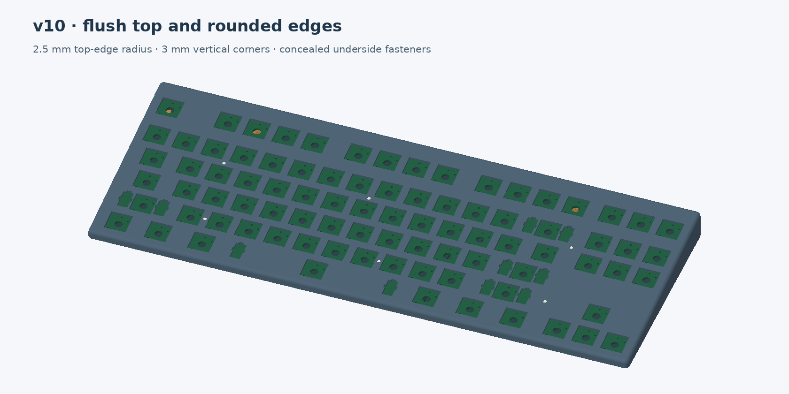

v10 · alternate mechanical prototype
A flush top with softly rounded edges.
View the completed keyboard from every side →
The plate flows into the side walls through a broader 2.5 mm top-edge radius, with 3 mm vertical corner radii. The top stays flush, with no raised lip or upper assembly seam. Eight concealed mounts retain the inset removable bottom.

Keys omitted to show the flush plate and rounded perimeter. No raised lip or top screw openings.
2.5 / 3 mm radiiBroader top roll-over and vertical corners
8 × M2 × 4Underside screws with standard M2 nuts
Original v10 PCBNo changes to fabrication or assembly files
Print files and coupons ZIPSmall corner test printCAD assembly STEPPrinting and assembly instructions
Print the mount and USB coupons first. CAD clearance checks do not prove printed strength or real component fit. Split versions fit a 256 mm bed; their bonded seams need finishing to match the full-size render.